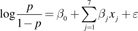

Interpretation of palynological data is often limited by taxonomic resolution. Numerous examples exist of genera or even whole families where minimal morphological variation precludes distinguishing pollen of individual taxa from one another, resulting in all types being lumped together into one class. This confounds accurate interpretation of pollen spectra (Birks and Birks, 2000; Punyasena et al., 2012). Recent advances in imaging technology and analysis have led to some progress in differentiating between notorious problem types (e.g., Sivaguru et al., 2012; Mander et al., 2013). However, it is likely that in many cases, even if differences between two (or more) closely related taxa can be identified, there remains a degree of overlap that prevents firm classification of every grain. Furthermore, in the majority of pollen morphology studies that have been undertaken both recently and throughout the history of the discipline, keys and criteria for differentiation are typically based on a relatively limited number of observations on pollen grains from a similarly limited number of individuals. This is an extremely small sample of a population that is typically in the order of thousands of pollen grains per flower, thousands of flowers per individual, and thousands to millions of individuals per species. This of course results from the practical limitations associated with manually measuring individual grains on a microscope and/or microscope imagery. In cases where differentiation is particularly important, attempts have been made to more comprehensively investigate the range in overlap (in features such as size, surface texture, and pore number), followed by application of various statistical techniques to fit distributions of these parameters of a sample of unknown composition to determine the contribution from each of the closely related taxa (e.g., Hansen and Cushing, 1973; Gordon and Prentice, 1977). However, the requirement for large numbers of measurements on many pollen grains makes these studies extremely time consuming, and therefore seldom performed (Birks and Birks, 1980).
Advances in digital imaging technology, image processing, and computer power are increasingly being harnessed for palynological research (Holt and Bennett, 2014). Their potential for application in the types of studies described above is obvious. At the most basic level, they can be employed to generate the large data sets of observations and measurements needed for accurate assessment of the existence and scope of overlap between taxa. Ideally, they can provide automated identification of individual pollen grains (with associated probabilities). This paper presents a pilot study example illustrating the former application, using an existing automated palynology system on a pollen differentiation problem relevant to the New Zealand honey industry.
The pollen of the Myrtaceae family are generally regarded as challenging to distinguish on the basis of morphology (Erdtman, 1952; Pike, 1956; McIntyre, 1963). Among the members of this family present in New Zealand are Leptospermum scoparium J. R. Forst. & G. Forst, and Kunzea ericoides (A. Rich.) Joy Thomps. (formerly L. ericoides A. Rich.). These two taxa are of particular significance because of their nectar contribution to honey. Honey derived from the nectar of L. scoparium (manuka) attracts a premium price because of its purported health benefits (Russell et al., 1990; Allen et al., 1991), while honey derived from Kunzea (kanuka) is generally regarded as less beneficial (but see recent work by Gannabathula et al., 2012). Melissopalynological analysis is routinely applied in determining the floral origins of honey (Petersen and Bryant, 2011); however, its application to manuka honey is somewhat limited because of the similarity in these two key pollen types. At present, pollen analyses can only give the proportion of grains that are the “manuka/kanuka type,” and this value must be above a certain percentage to be accepted for the honey to be considered manuka (Moar, 1985; Mildenhall and Tremain, 2005). In many cases, however, much of these grains may, in fact, be of Kunzea (kanuka). Chemical tests are often employed for validating claims of manuka honey authenticity, but these also have demonstrated limitations (Ministry for Primary Industries, 2013). Therefore, the ability to better separate these two pollen types is highly desirable.
Previous studies on pollen of New Zealand L. scoparium and K. ericoides (McIntyre, 1963; Harris et al., 1992; Moar, 1993) report very little morphological variation between the two taxa. Both are monad, isopolar, angulaperturate, syncolpate, tectate with tectum smooth or faintly regulate, triangular in shape in polar view, and amb concave to convex (Moar, 1993). A slight difference in overall size has been observed, with grains of L. scoparium generally being larger than K. ericoides, but with some degree of overlap in the size ranges. Also, shape in equatorial view varies slightly, with L. scoparium oblate and K. ericoides oblate to peroblate (for definitions of pollen morphology terminology, see Punt et al., 2007). Overall, they are regarded as indistinguishable (Moar et al., 2011).
Following the point made earlier, these studies are based on a relatively limited number of observations. For example, McIntyre (1963) used between 10 and 50 observations, and Moar (1993) even fewer. Therefore, we lack an appreciation of the true range of this size difference. More comprehensive characterization of shape and size parameters through examining a much larger sample size of both individual plants and pollen grains is required if maximum potential for differentiating between the two types is to be realized. To demonstrate the latter aspect (large volume of grains), a Classifynder automated palynology system (see www.classifynder.com, and Holt et al., 2011) was used to collect a large number of images of pollen grains from two individuals each of L. scoparium and K. ericoides. From these images, values of several geometrical parameters were automatically extracted and used as measurements of shape and size. These parameters are common to image processing, but not to traditional pollen morphology. They may therefore offer new opportunities for classification, where other standard palynological features (such as aperture number, surface texture, and polar axis length) have proved redundant for these types. The equivalent data were also collected from one sample of manuka honey and compared with the data from the plant pollen in an effort to illustrate what proportion of the pollen likely came from either species.
It should be acknowledged that size is regarded by many as the least reliable morphological parameter of pollen grains, due to the demonstrated potential for variation with age and laboratory treatment methods (Reitsma, 1969; Faegri et al., 1989; Flenley, 2003). However, it is apparently the only parameter with any potential for variation available to test in this case. All attempts have been made to minimize any change in size resulting from laboratory treatments, and where relevant, other causes of size change have been addressed.
At this point, it is necessary to address the rather obvious question: why not simply use the Classifynder's classifier to distinguish the two types? The answer to this is that a key aim of the paper is to illustrate an alternate application of the Classifynder, i.e., as a tool for investigating pollen morphology, as opposed to just counting and classifying. This work is essentially only harnessing the automated pollen detection and imaging capability of the Classifynder for automatic generation of large data sets.
In cases such as this (i.e., manuka vs. kanuka), such studies into basic morphology will likely prove to be crucial to accurate automatic classification. The training files that are the basis for artificial classifiers must be truly representative of the taxa they are trying to classify if there is to be any hope for accuracy. In many cases, pollen morphology is known to vary within a species, and therefore the range of this variation must be understood to ensure that it is adequately captured in the training set. This may require examining pollen from many individuals across the full geographical and ecological range of a taxon (Gordon and Prentice, 1977). Application of automated technology for image capture and making measurements will make such a large task much more achievable than with manual methods.
MATERIALS AND METHODS
Pollen collection and preparation—Pollen was collected from mature anthers of two individuals of L. scoparium and K. ericoides (from here on referred to by their common names, manuka and kanuka, respectively), and from one sample of monofloral manuka honey. The honey sample contains >70% manuka/kanuka-type pollen, as determined by conventional honey pollen analysis, qualifying it as monofloral, based on the guidelines of Moar (1985). It was also regarded as manuka based on organoleptic properties and on apiarist knowledge of location and timing of nectar collection. The pollen was acetolyzed, suspended in silicone oil, and mounted on glass slides. Acetolysis and silicone oil were used because this combination produces optimum images on the Classifynder. The process of acetolysis is known to alter the size of pollen grains (Reitsma, 1969; Faegri et al., 1989), but it is assumed that the degree of such alteration will be consistent across all samples. In addition, with respect to size, pollen grains mounted in silicone oil are more stable through time than glycerine jelly mounts (Andersen, 1960). The slides were placed on a Classifynder, which automatically locates and images all pollen grains present on the slide (see Holt et al., 2011 for further explanation of Classifynder operation). Images of pollen grains oriented in polar and equatorial views were manually extracted from the image set produced by the Classifynder (Fig. 1). Five hundred images of each view per individual were obtained for analysis. Effort was made to ensure that minimal time elapsed between sample preparation and scanning/image gathering to minimize changes in pollen size, which may have occurred with time (Gordon and Prentice, 1977).
Size and shape measurements—Pollen size is captured through two different measurements: the area of the pollen grain, and maximum Feret diameter (MFD). The value for area is determined from the number of pixels in the pollen image, converted to µm2. MFD is defined as the length of the line segment joining the two points on the perimeter of the particle (pollen) that are farthest away from each other.
Measurements of shape used include (all definitions follow those given by National Instruments, 2000):
-
Elongation factor = the maximum Feret diameter divided by the length of the shortest side of a rectangle surrounding the particle.
-
Compactness factor = the area of the particle divided by the product of the width and the height of a rectangle surrounding the particle.
-
Convex hull = the area of the smallest convex polygon containing all points in the particle, divided by the area of the particle.
-
Heywood circularity factor = the length of the perimeter of the particle divided by the circumference of a circle with the same area as the particle.
-
Hydraulic radius = the particle area divided by the particle perimeter.
Fig. 1. Examples of the Classifynder-generated images used in the study. (A–C) Leptospermum scoparium, equatorially oriented images; (D–F) L. scoparium, polar-oriented images; (G–I) Kunzea ericoides, equatorially oriented images; (J–L) K. ericoides, polar-oriented images.
Values for all seven features are automatically calculated by the Classifynder software during image capture and tagged to each image as metadata. The metadata are then exported to a spreadsheet file. The data for the five samples (four plants, one honey) are compared through descriptive statistics and frequency distributions (Table 1, Fig. 2). Bivariate plots for all possible combinations of the seven features were also created for both views to identify any combinations that may prove definitive (Fig. 3).

Table 1. Minimum, maximum, mean, and standard deviation (SD) values for each of the seven parameters measured.
These basic, relatively qualitative analyses are followed with a formal analysis of the data using suitable statistical machine-learning methods, specifically multivariate versions of linear discriminant analysis, logistic regression classification, and a nonparametric (kernel-density estimate) naive Bayes classifier. These were performed as follows.
Fig. 2. Relative frequency distribution data for area and maximum Feret diameter (MFD) for the four plant samples. (A) Area, equatorial view; (B) MFD, equatorial view; (C) area, polar view; (D) MFD, polar view.
The seven characteristics of the ith grain are denoted as the vector xi, and the class (kanuka = 0, manuka = 1) as the scalar yi. Linear discriminant analysis fits two multivariate Gaussian distributions to the xi, one, with density ƒ1(x), to the points with yi = 1, and the other, ƒ0(x) to the points with yi = 0. A point x0 of unknown class is then classified as class 1 if ƒ1(x0) > ƒ0(x0), as class 0 otherwise. Logistic regression fits the linear regression model
|  |
where p is the probability that the point x belongs to class 1. Finally, the naive Bayes classifier assumes that the characteristics are independent, and thus that the multivariate density is the product of the univariate densities. The latter can then be estimated nonparametrically using kernel-density estimation. See Hastie et al. (2009) for more details on the three methods.
As the samples K1 and K2 were indistinguishable (see Results), they were pooled to give a single sample for kanuka pollen, henceforth referred to as sample K. However, the manuka samples M1 and M2 differed significantly, and hence the analysis was performed three times—once with each sample, and once with the pooled sample. In each case or method, an error rate for classifying the two (kanuka/manuka) samples was calculated, and the fitted classifier was then applied to the honey data to estimate the proportion of manuka. The analyses were performed separately for polar- and equatorial-oriented images.
RESULTS
Frequency distributions of area and MFD for both polar and equatorial views show close similarity in distribution for the two samples of kanuka, but significant differences exist between the two samples of manuka (Fig. 2). Grains of sample M1 are similar in size and overlap significantly with K1 and K2, while grains of sample M2 are larger, with much less overlap with K1 and K2. Distributions for MFD of polar-oriented images show the narrowest range of overlap between the two taxa (Fig. 2D). Here, the frequency distributions for samples K1 and K2 are virtually identical.
Frequency distributions of the other shape parameters (not shown graphically) presented considerable overlap between both taxa in all cases. However, combining pairs of parameters in bivariate plots has shown some potential for differentiation (Fig. 3). Again, the greatest degree of separation was achieved on the polar-oriented images. Effective combinations were between Heywood circularity factor, hydraulic radius, and MFD. No combination proved useful for equatorially oriented images.
Figure 4 shows the frequency distribution of the manuka/kanuka-type grains from the honey sample against the frequency distribution for the kanuka and manuka plant pollen samples, which have now been combined. If it is assumed that these frequency distributions are representative of the full range of the taxa (which is unlikely, see later discussion), then these data can be taken as an indication of what proportion of the manuka/kanuka-type grains from the honey sample are actually manuka grains, which are kanuka, and which could be from either type. Similarly, plotting the honey grain values over the bivariate plots (Fig. 5) also provides a visual indication of what proportion of the grains are likely to actually be manuka. Such a graphical illustration is not easily achieved with the multivariate analyses.
Fig. 3. Biplots of Heywood circularity factor (HCF), maximum Feret diameter (MFD), and hydraulic radius (HR) for polar-oriented images. (A) HCF vs. MFD, (B) HR vs. MFD, (C) HCF vs. HR.
Results of the multivariate statistical analyses are presented in Table 2. As was the case for the frequency distributions and biplots, the polar-oriented images provide far better discrimination. The equatorial-oriented images appear to be particularly sensitive to the difference in the manuka samples; the error rates appear to be a reflection of the overlap in the size distributions between sample M1 and samples K1 and K2, and the difference between M2 and the kanuka samples. Hence, the classifier appears to be working mainly on size, which is undesirable.
In contrast, when using the polar-oriented images, there is less discrepancy between the error rates for the different manuka samples. In fact, the size-concordant samples are better classified than the size-discordant ones, but all of the error rates are better.
The error rates, and indeed the estimated proportion of the honey pollen that is manuka, differ little from classifier to classifier. In combining the manuka samples, the linear discriminant analysis fits a single Gaussian distribution to the combined sample, in effect treating the two samples as taken from a Gaussian superpopulation. In contrast, the naive Bayes classifier uses a kernel-density estimate, thus preserving the multimodal nature of the data. However, both linear discriminant analysis and the naive Bayes classifier estimate the honey pollen to be 96% manuka, which we can thus consider to be a robust result. Logistic regression produces an estimate between the two, but with a slightly lower error rate, and may thus be the best classifier.
DISCUSSION
This preliminary study has demonstrated potential for using some basic size and shape features extracted from automatically collected digital images to build a model to aid in classification of L. scoparium (manuka) and K. ericoides (kanuka) pollen, which differ only in shape and/or size. The single factor that gave the apparent best discrimination between the two taxa was from MFD measured in polar-oriented images. Combinations of MFD, Heywood circularity factor, and hydraulic radius were also useful, but again only in polar-oriented images. Likewise, multivariate classifications based on polar-oriented images delivered the lowest error rates. Measurements made in polar orientation may be more discriminative because Heywood circularity factor and hydraulic radius are both essentially measures of circularity. Therefore, variation in these is likely to indicate variation in amb shape between the pollen types, which can only be effectively captured in polar-oriented images. MFD is also likely to be affected by amb shape. In grains with a concave amb, MFD will most likely lie between two pores/corners of the grain, while in grains with a straight to convex amb, MFD would potentially lie between a pore and the crest of the limb opposite. Previous research has reported variation in shape in equatorial view, with L. scoparium oblate, and K. ericoides oblate to peroblate (Moar, 1993). This variation has not been clearly captured in the data for equatorial images, suggesting it is not significant.
Fig. 4. Relative frequency distribution data for area and maximum Feret diameter (MFD). Distributions for the two individuals of each taxa have been combined to produce a single distribution, and data for the honey sample have been added. (A) Area, equatorial view; (B) MFD, equatorial view; (C) area, polar view; (D) MFD, polar view.
With respect to the honey sample, the frequency distributions for area and MFD values of the manuka/kanuka-type grains overlapped with the distribution of the two L. scoparium samples, in particular that of sample M2 (Fig. 4). Without any further statistical considerations, these results indicate that 40–80% of the pollen grains are from L. scoparium, and the bulk of the remainder from either K. ericoides or L. scoparium. These values have been obtained by taking the proportions of grains that occur within the portion of the distribution exclusive to L. scoparium. If it is assumed that MFD of polar-oriented images is the most discriminate feature, then around 80% of the grains appear to be of L. scoparium. When the manuka/kanuka-type grains are added to the biplot combinations (Fig. 5), a similar pattern emerges, in that the bulk of the grains plot in the general field defined by the two L. scoparium samples. However, rather than being spread evenly over this field, the data points fall in the region between the M1 and M2 samples.
Comparing the frequency distribution of the manuka/kanuka-type pollen grains against that of the plant pollen samples is an extremely simplistic approach. However, it does provide a graphical indication of which taxon the bulk of the grains are most likely derived from. Such an approach is obviously not new (e.g., Hansen, 1947), and also involves some significant assumptions about the distributions and limits of the data (Gordon and Prentice, 1977). However, the ability to obtain and compare quantitative data from such a large number of observations is virtually impossible in routine honey pollen analysis, and therefore still offers some advantages to the status quo.
Subjecting the data to the statistical analyses yields a numerical value for the manuka/kanuka composition of the sample of ∼96% for all three classifiers, with error rates comparable (3–4%) across the three classifiers. Agreement between the three classifiers lends confidence to the accuracy of this value. This in turn implies that the values obtained from the single parameter and bivariate analyses are underestimating the proportion of L. scoparium grains in the sample. As mentioned earlier, this is a pilot study into further clarifying the size and shape variation between two morphologically similar taxa using automatically generated imagery, and testing the usefulness of selected geometric parameters in distinguishing the pollen types. Obviously, this has involved a number of assumptions, the most significant being:
-
The four plant samples are representative.
-
The subset of images used (i.e., only polar and equatorial views) are representative of the range of shape and size of the pollen in the samples.
-
Results are not biased by changes in pollen shape or size during and after laboratory processing, or by different origins (plant vs. honey).
Fig. 5. Biplots of Heywood circularity factor (HCF), maximum Feret diameter (MFD), and hydraulic radius (HR) for polar-oriented images. Data for the two individuals of each taxa have been combined to produce a single distribution, and data for the honey sample have been added. (A) HCF vs. MFD, (B) HR vs. MFD, (C) HCF vs. HR.
With respect to the first assumption, it is highly unlikely that this is the case. The four individuals used here are far from satisfactory; they were simply what was on hand at the time the pilot was conceived (which fell outside of the flowering period of the two taxa). The fact that up to ∼2% of the manuka/kanuka-type grains from the honey sample fall outside the size range (i.e., area and MFD) of the four plant samples (Fig. 4) is evidence that the existing data set does not fully capture the range of the two taxa. The difference between the two L. scoparium samples in nearly all parameters measured is further indication that there may be considerable variability in this taxon. Before this technique can be applied to more conclusively assess the composition of manuka/kanuka-type pollen in honey samples (or other types of samples, for that matter), comprehensive reference distributions must be defined.
Obtaining the material to build these distributions will require repeating the analyses described above on a collection of individuals that represent the full geographical and ecological range of the taxon (Gordon and Prentice, 1977). Building representative distributions will be further complicated by the fact that Leptospermum and Kunzea are capable of hybridizing (Harris et al., 1992), and that there are numerous undescribed species in the Kunzea genus in New Zealand. Repeat sampling of the same individuals in different years may also be needed to capture year-to-year variation in pollen shape and size resulting from different growing conditions (e.g., effects of drought). This is a challenging task, but again is made more achievable through the application of automated systems to gather the data needed.
The second assumption is important because, in this case, the subset of 1000 grains of the correct orientations represents only 5–10% of the total number of grains imaged in each sample. The techniques applied in this paper cannot be applied to images of manuka/kanuka-type grains in any orientation, as this just produces a continuum of values. To apply the results to the whole sample requires that this subset is representative of the full sample. Bias could be expected if pollen size or shape influenced the final orientation of the grain on the slide. This is likely to occur in very large or irregularly shaped pollen grains (e.g., saccate grains such as Pinus, Abies, etc.) but not in smaller grains like those of K. ericoides and L. scoparium. Nevertheless, there remains a degree of uncertainty around this issue, and it is a difficult issue to test. However, further developments in imaging and image processing (using either the Classifynder or other system) might overcome the need for the oriented images. For example, the Classifynder approach of capturing several images through the range of focus offers the opportunity to calculate three-dimensional parameters of shape and size. At present, the system takes the in-focus portion of each image and stiches them together to produce a single two-dimensional image from which the 43 features are extracted. However, the potential exists to extract more information on the three-dimensional shape of the pollen. This could then open the door to making measurements on all grains imaged, not just those in the correct orientations. The key issue is whether there is a difference in the first place, which was one of the aims of this pilot study.
Table 2. Error rates and proportion of honey pollen identified as manuka, as determined by the three different classification methods.
With respect to the third assumption, as mentioned in the Methods section, pollen size and shape are known to change in response to laboratory treatments. By treating all samples equally, it is hoped that any changes in shape that do occur are consistent in magnitude and nature across the five samples. However, it is difficult to account for changes in pollen size and shape in the honey pollen grains, which may have resulted from processing through the bee and time spent suspended in honey. Exposure to moisture during this time would have likely caused some expansion in the pollen grain. The dehydration associated with the acetolysis procedure should have reversed this expansion. Nevertheless, the results for area and MFD show that the honey grains are on average larger than those of the plant samples. This could either result from inadequate reference distributions (discussed above) or could represent expansion from time spent in honey, or a combination of the two. Again, further research into this area is required. This could best be achieved through collecting pollen directly from manuka and kanuka plants and comparing it with pollen extracted from honey gathered from the same plants or from plants in the same region (this requires that pollen morphology of the two taxa does not vary significantly within a local population). Restricting processing to the minimum steps (i.e., ethanol extraction from honey) followed by mounting, in glycerine jelly or a similar medium that requires minimal preparation, would limit the opportunity for processing-related shape and size changes to occur. Therefore, any significant differences in shape and size between the plant and honey pollen samples could reasonably be attributed to the effects of “bee processing.”
CONCLUSIONS
Overall, this investigation reinforces earlier work showing that an overlap exists between the two taxa. The use of automatically generated large data sets has produced a more comprehensive picture of the size differences between the individuals surveyed than previously existed. Applying geometrical measures of shape and size, which are not standard in traditional pollen morphology studies, has also shown potential in differentiating pollen types that vary only in size and/or subtly in shape. For the purposes of demonstration, the assumption has been made that these individuals are representative of their taxon. However, this is obviously unlikely, and much more work is required to produce the comprehensive reference distributions needed. This would also be the case if this methodology were to be applied to other morphologically similar pollen types where subtle shape and size variations were the only difference.
LITERATURE CITED
Cited by
Online publication date: 22-May-2015.
Crossref
Online publication date: 18-Aug-2014.
Abstract & References : Full Text : PDF (468 KB)
Online publication date: 18-Aug-2014.
Abstract & References : Full Text : PDF (2959 KB)